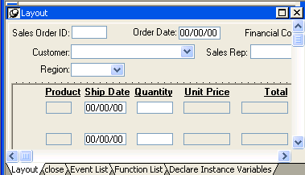
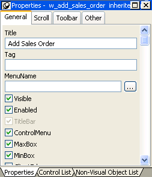
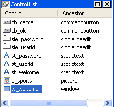
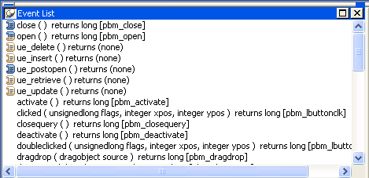
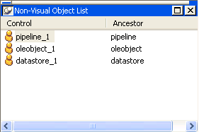
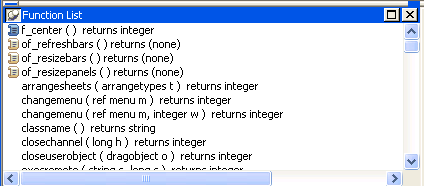
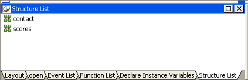
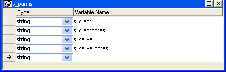

In PowerBuilder, you edit objects such as applications, windows, menus, DataWindow objects, and user objects in painters. In addition to painters that edit objects, other painters such as the Library painter and the Database painter provide you with the ability to work with libraries and databases.
There are several ways to open painters that edit objects:
Most other painters are accessible from the New dialog box. Some are also available on the PowerBar and from the Tools menu.
 Select Target for Open You may see the Select Target for Open dialog box if you use
the same PBL in more than one
target. When you open an object in a PBL that
is used in multiple targets, PowerBuilder needs to set global properties
for the specific target you are working on. If you open the object
from the Workspace page when the root is not set to the current
workspace, PowerBuilder asks you which target you want to open it
in. A similar dialog box displays if you select Inherit, Run/Preview,
Regenerate, Print, or Search.
Select Target for Open You may see the Select Target for Open dialog box if you use
the same PBL in more than one
target. When you open an object in a PBL that
is used in multiple targets, PowerBuilder needs to set global properties
for the specific target you are working on. If you open the object
from the Workspace page when the root is not set to the current
workspace, PowerBuilder asks you which target you want to open it
in. A similar dialog box displays if you select Inherit, Run/Preview,
Regenerate, Print, or Search.
The PowerBuilder painters are:
Most painters that edit PowerBuilder objects have these features:
| Feature | Notes |
|---|---|
| Painter window with views | See "Views in painters that edit objects". |
| Unlimited undo/redo | Undo and redo apply to all changes. |
| Drag-and-drop operations | Most drag-and-drop operations change context or copy objects. |
| To-Do List support | When you are working in a painter, a linked item you add to the To-Do list can take you to the specific location. See "Using the To-Do List". |
| Save needed indicator | When you make a change, PowerBuilder displays an asterisk after the object's name in the painter's Title bar to remind you that the object needs to be saved. |
Most of the painters that do not edit PowerBuilder objects have views and some drag-and-drop operations.
Each painter has a View menu that you use for opening views. The views you can open depend on the painter you are working in. Every painter has a default arrangement of views. You can rearrange these views, choose to show or hide views, and save arrangements that suit your working style. See "Using views in painters".
Many views are shared by some painters, but some views are specific to a single painter. For example, the Layout, Properties, and Control List views are shared by the Window, visual User Object, and Application painters, but the Design, Column Specifications, Data, Preview, Export/Import Template for XML, and Export Template for XHTML views are specific to the DataWindow painter. The WYSIWYG Menu and Tree Menu views are specific to the Menu painter.
The following sections describe the views you see in many painters. Views that are specific to a single object type are described in the chapter for that object.
The Layout view shows a representation of the object and its controls. It is where you place controls on an object and design the layout and appearance of the object.

If the Properties view is displayed and you select a control in the Layout view or the Control List view, the properties for that control display in the Properties view. If you select several controls in the Layout view or the Control List view, the properties common to the selected controls display in the Properties view.
The Properties view displays properties for the object itself or for the currently selected controls or nonvisual objects in the object. You can see and change the values of properties in this view.

The Properties view dynamically changes when you change selected objects or controls in the Layout, Control List, and Non-Visual Object List views.
If you select several controls in the Layout view or the Control List view, the Properties view says group selected in the title bar and displays the properties common to the selected controls.
In the Properties view pop-up menu, you can select Labels On Top or Labels On Left to specify where the labels for the properties display. For help on properties, select Help from the pop-up menu.
If the Properties view is displayed and you select a nonvisual object in the Non-Visual Object List view, the properties for that nonvisual object display in the Properties view. If you select several nonvisual objects in the Non-Visual Object List view, the properties common to the selected nonvisual objects display in the Properties view.
The Script view is where you edit the scripts for events and functions, define and modify user events and functions, declare variables and external functions, and view the scripts for ancestor objects.

You can open the default script for an object or control by double-clicking it in the System Tree or the Layout, Control List, or NonVisual Object List views, and you can insert the name of an object, control, property, or function in a script by dragging it from the System Tree.
For information about the Script view, see Chapter 7, "Writing Scripts ."
The Control List view lists the visual controls on the object. You can click the Control column to sort the controls by control name or by hierarchy.

If you select one or more controls in the Control List view, the controls are also selected in the Layout view. Selecting a control changes the Properties view and double-clicking a control changes the Script view.
The Event List view displays the full event prototype of both the default and user-defined events mapped to an object. Icons identify whether an event has a script, is a descendent event with a script, or is a descendent event with an ancestor script and a script of its own.

The Non-Visual Object List view is a list of nonvisual objects that have been inserted in an Application object, window, or user object of any type. You can sort controls by control name or ancestor.

The Function List view lists the system-defined functions and the object-level functions you defined for the object. Icons identify whether a function has a script, is a descendant of a function with a script, or is a descendant of a function with an ancestor script and script of its own.

Note that although the half-colored icon identifies the myfunc user-defined function as having both an ancestor script and a script of its own, for a function this means that the function is overridden. This is different from the meaning of a half-colored icon in the Event List view.
The Structure List view lists the object-level structures defined for the object.

If you double-click a structure in the Structure List view, the structure's definition displays in the Structure view.
The Structure view is where you edit the definition of object-level structures in the Window, Menu, and User Object painters.
